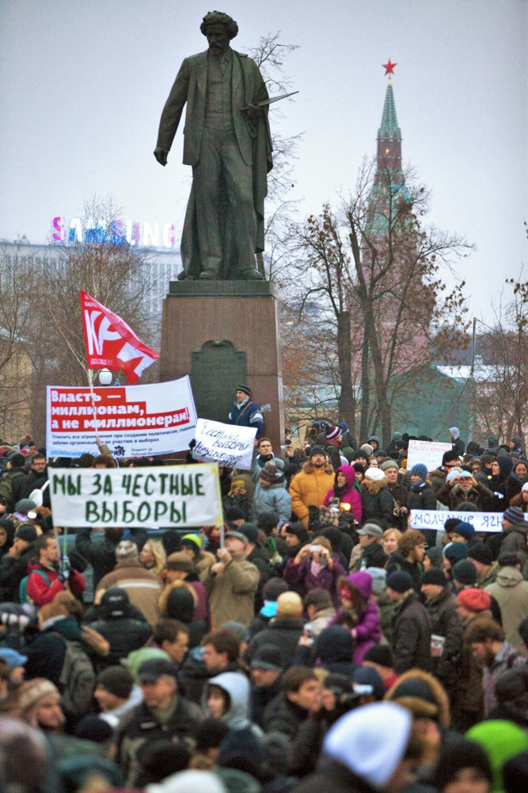

Book project: The Machinery of Manipulation
Most authoritarian regimes today hold multiparty elections. This elections help prop up authoritarian rulers in many ways: by revealing useful information about the population, the opposition, and elites; by channeling politicians’ ambitions within the system, and by providing a mechanism for allocating rewards to regime supporters. Despite these benefits, elections provide an opportunity for opposition actors to challenge the regime, creating a moment of considerable risk for authoritarian rulers.

Ruling parties in authoritarian regimes manage this risk, in part, through illicit forms of election manipulation: ballot-stuffing, falsification, voter-pressure, vote-buying, and more. Since elections and election manipulation are central to contemporary non-democratic government, scholars and policymakers have worked to understand that factors that enable or restrain the use of illicit manipulation tools.
A conventional wisdom in studies of electoral manipulation holds that the more severely an incumbent manipulates an election, the more likely mass protest becomes. It is frequently held that this risk of protest, which is costly and dangerous for incumbents, acts as a brake on electoral manipulation. Cross-national tests of this assumption are scarce, however, and evidence from within cases is ambiguous.
This book investigates and challenges that assumption, while building an alternative theory of electoral manipulation, and the relationship between rigged elections and and electoral protest in non-democracies.
Theory: Survival of the fraudulent
The theory presented in this book, which I call the regime-strength model of electoral manipulation builds on prior work showing that rigged elections can signal incumbent strength, rather than weakness (Simpser 2013), adding newer insights from studies of the principal-agent dynamics inherent in election manipulation efforts (Harvey 2019; Rundlett and Svolik 2016).
In brief, the theory holds that that where incumbents face more significant opposition challenges, they invest more in tools of social control—centralizing patronage resources, investing in the repressive apparatus, and reducing judicial independence, among other techniques. These efforts, in turn, enable more extensive electoral manipulation by reducing principal-agent problems that exist between political leaders and the front-line actors who must do the work of rigging an election.
In this view, the ability of the opposition to mobilize supporters is not a deterrent to manipulation for incumbents; rather, it is an impetus to develop an ever more effective machinery of electoral manipulation. The positive correlation that has been observed between severity of electoral manipulation and electoral protest is argued to be spurious, confounded by opposition strength. Stronger opposition groups are more likely to protest elections regardless of their integrity, and their strength motivates incumbents to invest in tools that make election integrity more effective by reducing agency loss.
The theory makes several predictions, many of which are contrary to the predictions in the existing literature. First, election manipulation should be positively associated with protest, and with pre-election indicators of opposition strength. Second, when electoral protest does occur, incumbents that manipulated the election more extensively should be able to prevail more quickly than incumbents that held cleaner elections. Finally, it predicts that electoral manipulation is disrupted not by protest risk (a threat to incumbents), but by domestic factors that increase the cost of manipulation to front-line agents. The legal risk for breaking the electoral law is one such factor.
Data, methods, and empirical findings
The book’s hypotheses are tested using multiple data sources, including:
- Cross-national statistical analysis of estimated levels of election manipulation and protest occurrence and duration (1990 - 2012).
- Election-forensic analysis of over 1,000,000 precinct-level election results from Russia (2002 - 2021),
- Election-forensic analysis of precinct-level election results from nine national elections in Ukraine (2002 - 2014).
- The text of thousands of court rulings in Russian courts, dealing with incidents of alleged electoral manipulation.
Contrary to most of the literature, this analysis finds that heightened protest risk is associated with worse election integrity, and that the best election manipulators are the same regimes that quash protest movements most quickly. This raises the specter of a vicious cycle, in which more effective electoral manipulation helps build stronger regimes, which can more easily defeat protesters, which then further strengthens the regime. This cycle is the mirror image of the optimistic one envisioned by some scholars, in which protest risk begets cleaner elections (Fearon 2011).
The book then investigates the conditions that do undermine the machinery of manipulation. Emphasizing the principal-agent relationship inherent in manipulation efforts, election-forensic analysis shows that when front-line agents tasked with breaking electoral rules face greater personal risks, patterns of manipulation change. When local risks are higher, election manipulation shifts from cost-efficient fraud to costly (but less individually risky) techniques like vote-buying and voter pressure. As these local risks increase, including the risk of criminal conviction, the machinery of manipulation begins to break down–leading to cleaner elections.
Implications
The results presented in the book challenge a traditional model of election manipulation, in which an incumbent’s efforts to pad their vote-share is a sign of weakness. By integrating insights from the principal-agent literature with Simpser’s view of manipulation as a potential signal of strength, a new model emerges in which electoral manipulation in non-democracies is more-or-less incidental to the level of manipulation. It shows that electoral protest should not be conceived as a potential deterrent to election manipulation, but rather a potential accelerant. It suggests that our understanding of how elections turn into moments of democratic liberalization or autocratization hinges less on the protest capacity of the opposition, and more on the ability of ruling parties to reward their agents and shield them from personal risk. This points the way to further avenues of research for scholars, and to different policy implications for those who wish to improve citizens’ ability to hold their rulers accountable through elections.